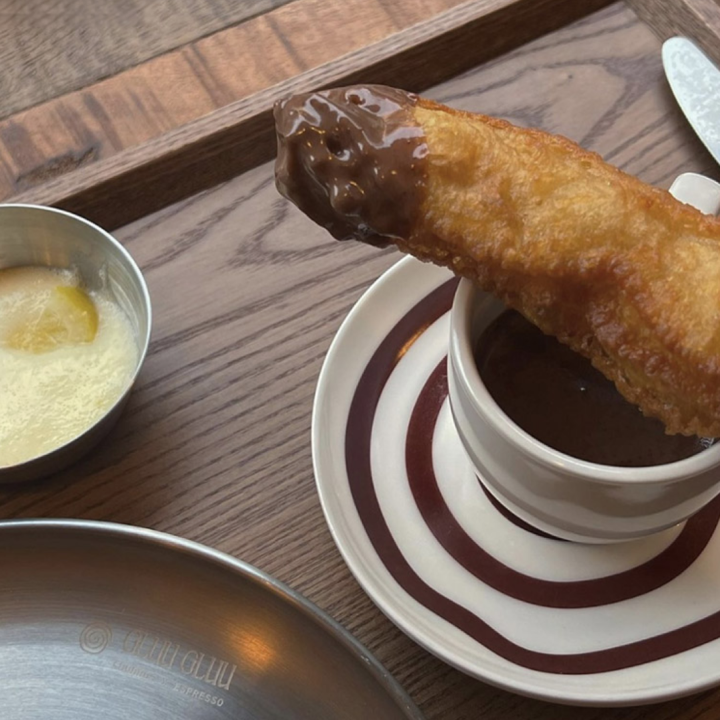

Z세대가 사랑하는 광장시장 필수 코스
시장
좋아하세요?
광장시장은 역사와 전통을 자랑하는 서울 최대 규모 전통시장이다. 서울 중심에 있고, 먹거리도 다양해 외국인 관광객에게도 인기 관광지다. Z세대 사이에선 특히 ‘육회 맛집’으로 유명하다. 젠지서울 에디터도 육회를 먹으러 몇 번 방문해 본 곳. 이번에는 단순히 육회만 먹고 돌아오는 것이 아니라, 매력 넘치는 광장시장 곳곳을 둘러보고 즐길 수 있는 코스를 준비했다.
창신육회 3호점
고소한 육회에 매화수 슬러시가 화룡점정
창신육회는 아침에 외국인 손님, 저녁에 내국인 손님이 가득하다. 슬러시 소주 냉장고는 이 가게 자랑 중 하나다. ⓒ젠지서울
광장시장에는 본점부터 4호점까지 총 네 개의 창신육회 점포가 있다. ‘육회 골목’이라 불릴 정도로 육회 식당이 여럿 들어서 있지만, 4호점까지 낸 곳은 진주육회와 창신육회뿐이다. 그만큼 많은 이들에게 사랑받는 곳이란 의미다. 창신육회는 특이하게 본점보다 ‘3호점’이 유명하다. 이곳에서만 파는 ‘매화수 슬러시’ 동영상이 SNS에서 인기를 끌며 오히려 본점보다 더 붐비는 지점이 됐다.
유명 맛집인 만큼 외국인과 한국인 가릴 것 없이 많은 사람이 몰린다. 그렇지만 지점이 여러 곳이기 때문에 대기줄 걱정은 크게 하지 않아도 된다. 3호점 자체도 1층과 2층을 합해 약 80명 정도 수용할 수 있다. 평일 저녁임에도 사람들로 북적였지만, 기다리지 않고 자리에 앉을 수 있었다. 육회와 잔치국수, 매화수 슬러시를 주문했다. 저녁 시간에는 식사와 반주를 즐기는 한국인들이 많다. 아침 이른 시간에는 주로 외국인 관광객들이 자리를 채워 산낙지 등 특색 있는 한국 음식을 즐긴다고.
3호점의 마케팅 포인트인 매화수 슬러시가 나왔다. 주문과 동시에 종업원이 화려한 솜씨로 병을 돌리자 살얼음이 회오리쳤다. 침을 꼴깍 삼켰다. 곧이어 육회와 잔치국수가 탁자 위에 올랐다. 노른자 옷을 잘 차려입은 육회가 반짝반짝 자태를 뽐낸다. 살얼음이 동동 뜬 매화수를 잔에 따르고 젓가락으로 육회 위 노른자를 섞었다. 날씨는 저기압이었지만 고기 앞으로 가니 기분이 좋아졌다. 신선한 식감에 젓가락질이 빨라졌다. 왜 4호점까지 있는지 맛으로 이해를 시켜주는 곳이다. 창신육회에 여러 번 왔지만 잔치국수는 처음 주문해 봤다. 그래도 간이 적당해 육회와 곁들이기 좋았다.
육회뿐 아니라 육사시미, 육회낙지탕탕이, 산낙지, 간과 천엽, 도토리묵, 녹두빈대떡 등 메뉴가 다양하다. 어떤 메뉴를 시켜도 실패하지 않는 ‘믿고 먹는 맛집’이다. 여러 번 방문한 에디터가 보증한다. 육회가 끌릴 때 수많은 가게 사이에서 고민이라면 이곳은 가장 먼저 떠올려야 할 곳이다.
365일장
전통시장에서 만난 새로운 과거
다양한 술과 간식, 그리고 Z세대 취향 저격 소품들이 반긴다. ⓒ젠지서울
창신육회에서 나와 3분 정도 걷자 녹색 네온으로 멋을 낸 365일장이란 간판이 보였다. ‘여기 광장시장 맞아?’라는 생각이 들 정도로 눈길을 끌었다. 이곳은 광장시장 명물 ‘박가네빈대떡’ 3대 사장인 추상미 대표가 세운 식료품점이다. 이곳 진가는 가게에 들어서는 순간 바로 알아챌 수 있다.
입구에 배치한 여러 소품과 지역 특산물로 만든 간식, 전통주까지. 로컬에 애정을 가진 구성이라는 걸 금세 느끼게 한다. 냉동실에는 우리 농산물로 만든 젤라또가 있다. 음식물 섭취 공간이 있어 젤라또를 먹어보기로 했다. 딸기, 유자, 감귤 맛 중 딸기 맛이 클래식하면서도 쫀득해 마음에 들었다. 로컬 브랜드 상품이 궁금하고, 새로운 것을 시도해 보고 싶은 Z세대라면 틀림없이 좋아할 것이라는 생각이 들었다.
더 안쪽으로 들어가면 특이하면서도 Z세대 취향을 저격하는 상품들이 기다리고 있다. 광장시장에 오면 빠질 수 없는 붕어빵, 마약김밥, 육회를 그립 톡으로 제작했다니. Z세대 감성과 광장시장이 만나면 이런 상품이 탄생하는가 보다. 시장뿐 아니라 한국 감성을 살린 전통 문양 스크런치, 에어팟 케이스, 에코백도 눈길을 끌었다. 흔한 기념품보다 실용적이면서 특색 있어 외국인 친구 선물로도 좋을 듯했다. 매장에는 한국인 말고도 중국일, 일본인 관광객들도 호기심 있게 상품들을 구경했다.
365일장에 오면 꼭 해야 하는 것은 손님들이 만들어 둔 광장시장 먹킷리스트, 투두리스트다. 단순히 그로서리 스토어 쇼핑에 그치지 않고 체험도 할 수 있게 한 배려다. 상점 가운데 자신이 쓴 리스트를 붙여둘 수 있고, 남들이 남긴 것을 구경하는 것도 재미있었다. 자기 지역 육회가 더 맛있다며 남긴 쪽지가 재밌었다. 광장시장에서 발길 닿는 대로 가는 것도 좋지만 이렇게 365일장에 붙은 먹킷리스트를 활용하면 더 큰 재미가 기다리고 있을 것이다.
어니언 광장시장점
시장에서 즐기는 색다른 파이
딸기잼과 파이의 조합은 최고. 테이크 아웃을 추천한다. ⓒ젠지서울
365일장에서 왼쪽 남1문으로 나오면 카페 어니언이 나온다. 어니언은 성수동, 안국동에서 각 지역 특성을 살린 인테리어로 이미 MZ 핫플로 자리 잡은 브랜드다. 그런 어니언이 광장시장에도 있다니 카페 러버라면 빼놓아선 안 된다.
광장시장점도 마찬가지로 지역 특색에 맞게 옛 시장 점포 모습을 최대한 살려놓았다. 박스에 아무렇게나 글씨를 휘갈긴 메뉴판이나, 테이프로 칭칭 둘러싸인 기둥과 의자가 왠지 모를 ‘젠지스러움’을 더한다.
이곳은 평일 개점 시각에 맞춰도 대기를 각오해야 한다. 외국인들에게도 필수 코스로 이름이 났는지 여러 국적의 손님들이 삼삼오오 주문하기를 기다린다. 대기 줄이 길면 주문을 하고서도 자리가 나기까지 기다려야 한다. 주문 후 10분 정도 더 기다려 스탠딩 테이블로 안내받았다.
광장시장점 시그니처 메뉴는 페스츄리(페이스트리) 피자 파이다. 한 조각 4000원, 8조각짜리 한 판은 2만9000원이다. 한 판을 사면 피자 박스에 포장해 준다. 잠깐 기다림 끝에 점원이 커피와 페스츄리 피자 파이 두 조각을 가지고 왔다. “나이프로 딸기잼을 떠서 파이 위에 펼쳐주세요. 손에 묻을 수 있으니 유산지로 감싸 피자처럼 드시면 됩니다”
설명대로 따라 하자 페스츄리의 바삭함과 딸기잼의 달콤함이 함께 밀려왔다. 잼 양도 많아 듬뿍 발라 먹을 수 있었다. 페스츄리라 부스러기가 여기저기 떨어지니 깔끔하게 먹고 싶다면 휴지는 필수다.
광장시장 분위기 속 페스츄리라니. 어니언의 새로운 시도는 Z세대의 호기심을 자극한다. 새로움과 색다른 힙함을 느끼고 싶은 Z세대라면 꼭 한 번 방문해 보자. 광장시장에 가면 육회가 필수인 것처럼 어니언도 이제는 필수 코스가 됐다. 다만 대기줄이 길어 테이블에서도 오랜 시간 머무를 수 없기에 테이크 아웃을 추천한다.